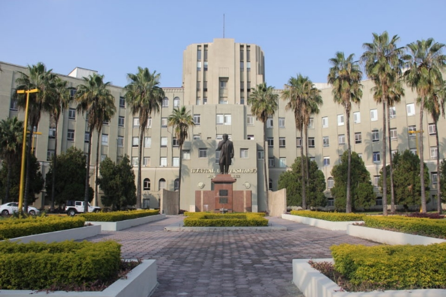
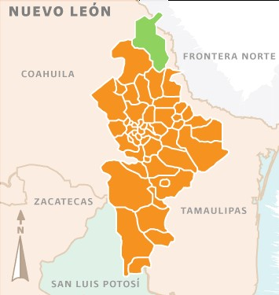
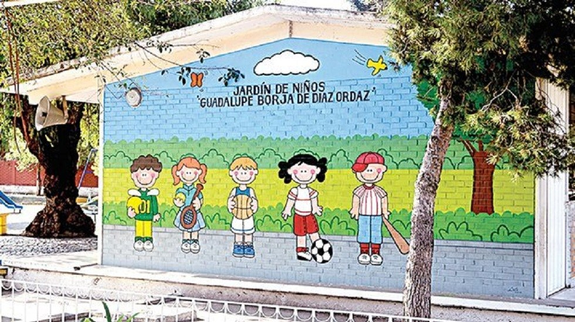
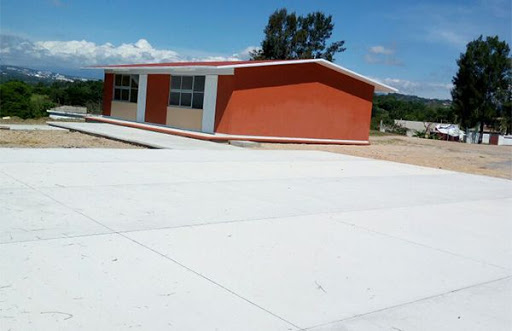
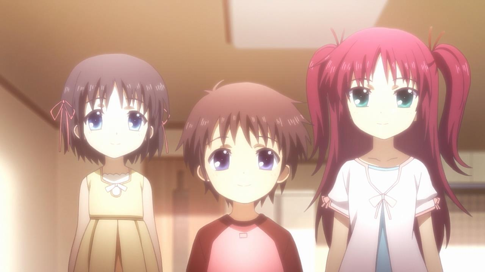
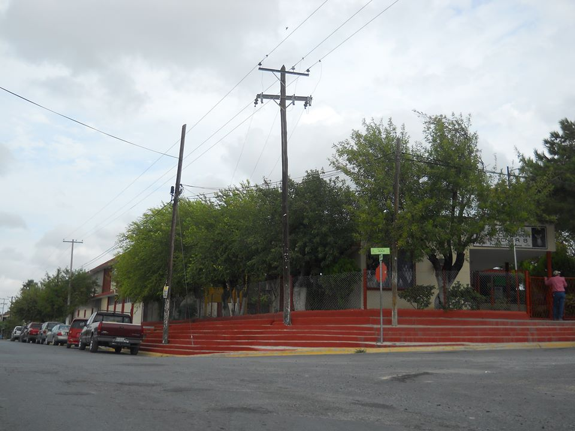
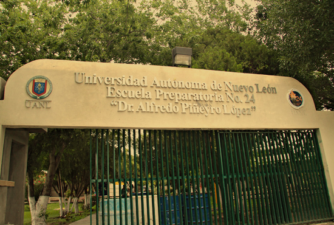
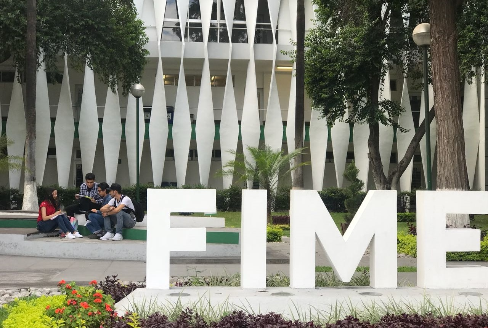

Luis Angel Castillo Cerda

Nací en 18 de Febrero de 2001, en San Nicolas de los Garza, Nuevo León. Mi padre Luis Raymundo Castillo Aguilar, es originario de Monterrey, Nuevo León, mientras que mi madre,
Thelma Aracely Cerda Luna, es originaria de un municipio llamado Anáhuac, Nuevo León. Mi mamá me contó que yo nací en el Hospital Universitario, lugar donde ella mas tarde empezó
a trabajar como enfermera en urgencias.
Mi madre me crió sola, dado que mi padre no se quiso responsabilizar cuando era pequeño. Viviamos en un departado prestado por parte de mi abuela paterna, la cual puedo decir
que se hizo incluso mas responsable que mi propio padre.

Durante mi infancia, estuve en 2 jardines de niños, el primer y segundo año estuve en Monterrey, mientras que el tercer año me traslade al municipio de Anáhuac, con mis abuelos
maternos, después de terminar el jardín de niños, regrese a Monterrey para comenzar la escuela primaria, en la cual solo estuve primer año, pues en vacaciones de verano, mi
madre contrajo matrimonio con Arturo Torres (mi padrastro).

Para segundo año de primaria, regrese a Anáhauc, y estuve otro año ahí, dado que mi padrastro es una persona que se
dedica en una ranchería, tercer, cuarto y quinto año de primaria, la hice en una escuela de ranchería, en la cual solo había 15 estudiantes entre todos los grados, y todos
eramos muy unidos, aquí, la maestra Nora, que era la unica que daba clases, se dedico a enseñarme a jugar ajedrez, con lo cual gracias a ella, yo participe 4 veces en torneos
municipales.
La primera vez, me quede a un punto de participar de manera regional (Sabinas) y en mi segunda vez llegue a las estatales (sexto grado de primaria).
Ya en sexto año, volvi a cambiarme de escuela, de regreso al municipio de Anáhuac, donde al final me gradue con el segundo lugar del salón, aparte de volverme apasionado al
futbol y me converti en un hincha de Tigres, dado que con aterioridad no me llamaba tanto la atención.
Recuerdo haberme convertido en aficionado de Tigres, porque me puse a ver un partido de futbol, dado que no había nada más en la televisión, y estaba jugando Tigres VS Estudiantes
TECOS, y en ese partido Tigres lo goleó 5 - 1 o 5 - 0 (no recuerdo muy bien) y desde ahí me empezo a gustar el futból.

Para este tiempo, yo ya contaba con dos hermanitas menores, Angela Nicole y Angely Aracely, que fueron resultado entre mi mamá y mi padrastro.
En secundaria, ingrese a una de las dos del municipio, aqui participaba en deportes como futbol, ajedrez (volvi a participar en torneos de ajedrez, pero lo maximo fue a
regionales, dado que empezaron a cancelar los torneos). Aqui me gradué, y no paso nada mas interensate. Aqui fue donde tuve acceso a internet de manera definitiva, descubrí
paginas como Facebook y YouTube, viendo como las personas subían videos y como queria imitarlos en ese entonces. En tercer año me cree mi propio canal, en el cual llegue a tener
la cantidad de 1,000 subscriptores, para mi eso era todo un logro, pero como subia puras cosas piratas, decidi cerrarlo. Despues di por terminado mi vida como "YouTuber".
Mientras yo tenia mi vida en secundaria, mis hermanas comenzaron a ir al jardín de niños, yo intentaba ayudarlas en todo lo que podía, pero la verdad simplemente les ponia un
video y ya con eso se entretenian, tambien recuerdo que molestaba mucho porque yo quería recoger mi cuarto y ellas llegaban a molestar, la verdad es que de pequeño les tenía muy
poca paciencia, ahorita ya me las se de todas todas, así que ya simplemente lo sobrellevo e intento ayudarlas para que no hagan los mismos errores que yo en primaria.

Terminando la secundaria, entre a la preparatoria, recuerdo que antes de entrar vivia estresado por si podria alcanzar lugar para ingresar, dado que se presentaron alrededor de 230
personas y solo ingresarian 120. Afortunadamente para mi, ingrese en el lugar 16, ni yo me lo esperaba. Aqui estudie en el programa de Técnico en Tic con enfoque a diseño grafico,
fue la primera vez que conoci la programación, y donde me llamo la atención al punto de querer dedicarme a ella, cabe descatar que antes de ingresar a la preparatoria, yo toda mi
vida estuve interesado en estudiar contabilidad, ya que uno de mis primos, que lo considero como mi hermano mayor, estudio eso, y yo queria seguir sus pasos, asi fue todo el jardín
de niños, escuela primera y secundaria, hasta que entre a la preparatoria. Aparte de eso, no hubo nada mas interesante, al contrario, me lleve una gran decepción del programa
técnico, pues considero que fue demasiado mediocre, y lo unico que puedo rescatar fue ese breve paso por programación y también gracias a esto, me intereso el mantenimiento y
ensamble de computadoras, aqui me propuse como meta armar una PC desde cero, ya al finalizar la preparatoria lo termine, y aun en la actualidad la sigo teniendo y metiendole
mas dinero.

Actualmente estoy en la poderosisima FIME, y estoy estudiando la ingeniería de sistemas, por programación, y aparte porque creo que es la carrera que tiene de todo un poco, tanto
en redes, programación, matemáticas y otras ramas que puede haber para poder ejercer la carrera. Ahora mismo estoy en cuarto semestre y recuerdo que en su momento estaba todo
enfermo y estresado porque pensaba que me había ido mal en el examén de ingreso, y pues ahora estoy en cuarto semestre... ¿Como? La verdad es que ni yo tengo idea, y mas con esta
cuarentena, porque siento que no he aprendido nada, desde que estamos en las clases en línea.